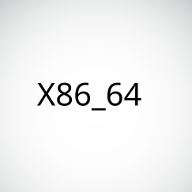

MALT supports various Linux distributions : Debian, Ubuntu, Fedora, Arch, Gentoo, Rocky.

MALT supports the x86_64 architecture, it should in principle also run under x86 32 bit.
The GIT repository of the project can be found on GitHub.
Here all the available releases of MALT sources :